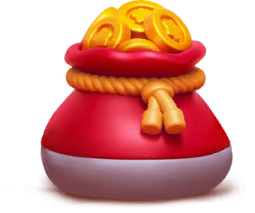
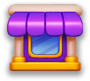

Trang chủ › Thể loại: Meta
Thể loại: Meta
31 trang

Vòng đời màn chơi (LevelFlow)
Khung điều khiển một lượt chơi: từ nút Play tới các nhánh thắng, thua, kẹt, thoát và chuỗi popup trở về Home.
🔓 Có từ level 1, không có điều kiện
20 use case · 72 config

Vật cản & cơ chế đặc biệt
Hơn 25 loại vật cản gắn lên chai hoặc phủ nhóm chai, mở rộng luật water-sort cơ bản của Magic Sort.
🔓 Theo thiết kế level; Curtain từ level 20, Clay từ level 60, Plaster từ level 110
26 use case · 36 config

Compensation (đền bù)
Kênh đền bù do vận hành phát khi có sự cố hoặc khi bù cho gói Supercharger.
🔓 Không có level gate; phụ thuộc backend có phát gói hay không
10 use case · 12 config
Endless Portal
Chuỗi ưu đãi bậc thang không điểm kết: mua bậc hiện tại để mở bậc kế, hết chuỗi thì quay vòng lại từ đầu.
🔓 Level 100 (EndlessPortalV2ConfigModel.json: FirstLevelToShow)
12 use case · 225 config

Kho đồ & tiền tệ
Sổ cái duy nhất cho coin, mạng, booster và mọi vật phẩm, với hệ thưởng chờ để UI luôn khớp số dư thật.
🔓 Có từ đầu game; booster mở dần từ level 15 (undo, shuffle, extra bottle)
22 use case · 50 config
Special Offer
Gói ưu đãi giới hạn thời gian, chỉ mua một lần, đổi bộ mặt theo chủ đề mùa do server chọn.
🔓 Level 55 (SpecialOfferConfigModel.FirstLevelToShow, client default)
13 use case · 111 config

Store & IAP & WebShop
Cửa hàng trung tâm bán gói coin, gói đặc biệt theo hạng và gói vĩnh viễn, kèm kênh thanh toán web giảm giá.
🔓 Luôn có sẵn; WebShop cần IsEnabled và level >= FirstLevelToShow (mặc định 5000)
18 use case · 208 config
Watch and Win
Xem quảng cáo có thưởng để tiến qua các mốc và nhận thưởng, mốc cuối là Grand Prize.
🔓 Level 30 (FirstLevelToShow, client default)
11 use case · 26 config

Welcome Back
Gói quà tái tương tác do server phát cho người chơi quay lại sau thời gian nghỉ.
🔓 Không có level gate; điều kiện phát gói do backend quyết định
10 use case · 13 config

Hướng dẫn người chơi mới
Nhiều lớp hướng dẫn chồng nhau: 4 level đầu dẫn tay, rồi popup giới thiệu theo mốc level.
🔓 Level 1–4 tự chạy; các lớp sau theo mốc level riêng
14 use case · 20 config

Journey (lộ trình & poster)
Bản đồ tiến trình theo level: mốc thưởng, mốc mở poster làm nền Home, và bộ thưởng lặp vô hạn sau khi hết bảng.
🔓 Theo cờ JourneyConfigModel.IsEnabled (json default true); mốc nhỏ nhất trong bảng poster là level 1
13 use case · 400 config

Sinh & phân phối level
Level Magic Sort dựng sẵn ngoại tuyến thành seed JSON, phân phối theo bảng LevelsConfig kèm cân bằng độ khó DLB.
🔓 Không có điều kiện — mọi người chơi dùng chung bảng LevelsConfig
18 use case · 564 config

Collection (bộ sưu tập thẻ)
Sưu tập 135 thẻ chia 15 theme, mở gói thẻ, đổi sao dư lấy rương và mở vòng Gold.
🔓 Level 95 (FirstLevelToShow); bắt đầu tải bundle từ level 20
16 use case · 177 config

Magic Lab
Sự kiện nhiệm vụ nhiều chặng: hoàn thành quest từ mọi hệ thống khác để trộn chai phép và mở rương.
🔓 Level 100 (MagicLabConfigModel.FirstLevelToShow, mặc định client)
15 use case · 25 config

Master League
Giải bảng xếp hạng PvP hai tuần với 5 bậc Elo, có lên hạng và xuống hạng cuối mùa.
🔓 Level 300 (FirstLevelToShow, mặc định client)
16 use case · 317 config

Merge Bakery
Mini-game merge-2 trên bàn 7×7: tiêu Energy bấm máy phát, ghép vật phẩm lên cấp để lấy Grand Prize.
🔓 Level 100 (MergeMiniGameConfigModel.FirstLevelToShow, mặc định client)
17 use case · 50 config

Underwater Treasures
Mini-game đánh chìm tàu dưới đáy biển: dùng Trident đập ô để tìm báu vật qua 10 chặng.
🔓 Level 140 (MiniGameConfigModel.FirstLevelToShow, mặc định client)
15 use case · 164 config

Vòng quay may mắn
Tích chip từ nhiệm vụ để quay vòng quay 5 chặng, chặng cuối chỉ ra thưởng Elite và Epic.
🔓 Level 130 (FirstLevelToShow, client default)
20 use case · 69 config

Bạn bè (Friends)
Danh sách bạn 1-1 tách khỏi Teams: tìm bằng User ID, gợi ý từ server, đồng bộ bạn Facebook và nhận thưởng liên kết một lần.
🔓 Theo cờ FriendsConfigModel.IsEnabled, không có điều kiện level trong client (suy luận)
18 use case · 22 config

Bảng xếp hạng
Trang xếp hạng thường trực gom bốn tab Players, Teams, Friends và Weekly vào một khung duy nhất.
🔓 Level 40 (localize LeaderboardSectionInfo 'Unlocks at Level 40')
14 use case · 15 config

Hồ sơ (Profile)
Danh tính công khai gồm tên, avatar, token bộ sưu tập, khung viền và kiểu chữ tên, hiện ở mọi màn xã hội.
🔓 Có từ đầu game; luồng bắt buộc đặt tên bật bằng remote config IsForcedNamePopupEnabled
17 use case · 21 config
Mời bạn (Referral)
Chia sẻ link mời riêng; khi người mới đạt mốc level, người mời nhận thưởng, tối đa 3 lượt.
🔓 Bật bằng remote config ReferralConfigModel.IsEnabled (mặc định false)
12 use case · 27 config

Đội (Teams)
Tính năng xã hội lõi: vào đội, chat realtime, xin/tặng mạng và thẻ, cùng dự sự kiện đồng đội.
🔓 Level 40 (TeamsConfigModel.UnlockLevel, client default; remote config ghi đè)
27 use case · 34 config

Analytics & Tracking
Hai đường ống sự kiện song song: Firebase có tham số và backend Grand chỉ có tên sự kiện.
🔓 Luôn bật từ chuỗi bootstrap
18 use case · 166 config
Khung sự kiện (Events)
Bộ khung dùng chung cho mọi sự kiện live-ops: Service, DataService, RemoteService, StateService cộng một ConfigModel do server bật tắt.
🔓 Mỗi sự kiện có FirstLevelToShow riêng (ví dụ SuperCharger 5, BoatRush 90, WheelOfFortune 130, Snitch 290)
16 use case · 23 config
LiveOps & Remote Config
Lớp hạ tầng cho phép vận hành đổi gần như mọi thông số Magic Sort mà không cần build lại app.
🔓 Luôn chạy, khởi tạo ngay khi mở app
16 use case · 29 config

Thông báo đẩy cục bộ
10 mẫu thông báo cục bộ hẹn giờ kéo người chơi quay lại, tắt được toàn bộ bằng một toggle trong Settings.
🔓 Có ngay từ đầu; Android 13+ và iOS cần cấp quyền qua RequestPermission()
14 use case · 16 config
Cài đặt (Settings)
Trang tuỳ chọn gom âm thanh, nhạc, rung, thông báo, liên kết tài khoản, pháp lý và hỗ trợ.
🔓 Có ngay từ đầu game
18 use case · 22 config

Màn hình chính (Home UI)
Trung tâm điều hướng: dải trang vuốt ngang, nút Play, vạc hiện số level, hai cột icon sự kiện và toolbar tooltip đa dụng.
🔓 Có ngay sau màn loading
18 use case · 28 config

Tài khoản & đồng bộ
Tài khoản ẩn danh gắn thiết bị, liên kết Facebook/Apple, đồng bộ toàn bộ tiến độ lên server.
🔓 Có từ lần mở game đầu tiên
24 use case · 33 config
Đa ngôn ngữ (Localization)
Toàn bộ chữ của Magic Sort nằm trong một asset I2 Localization: 1.471 term dịch sang 11 ngôn ngữ.
🔓 Luôn bật, khởi tạo ngay khi mở app
15 use case · 21 config